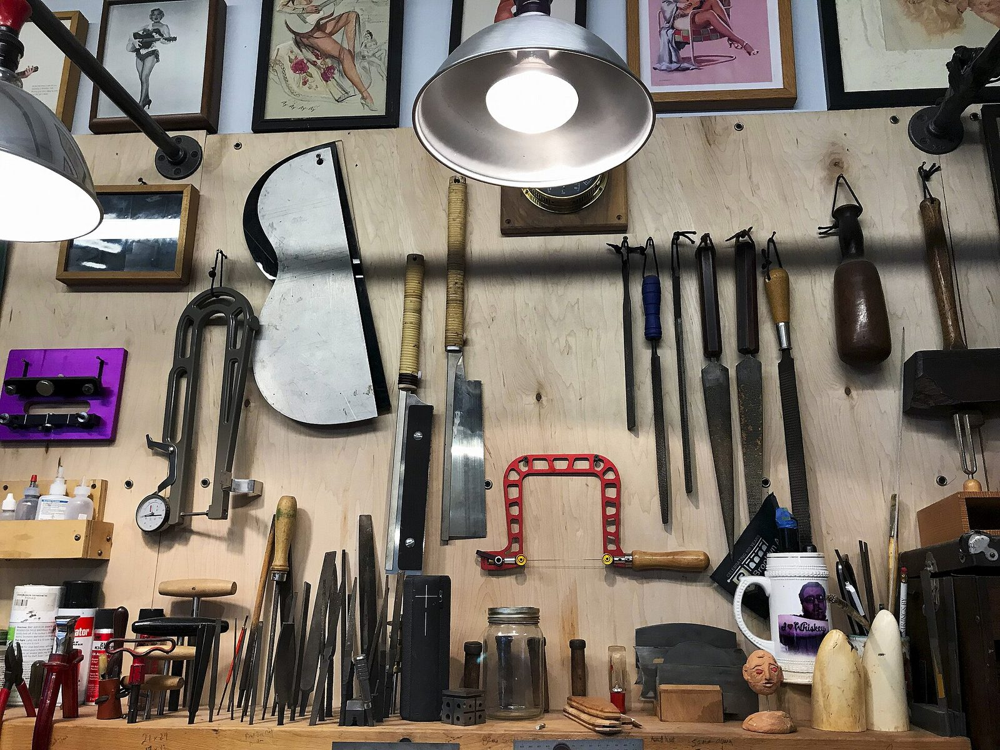
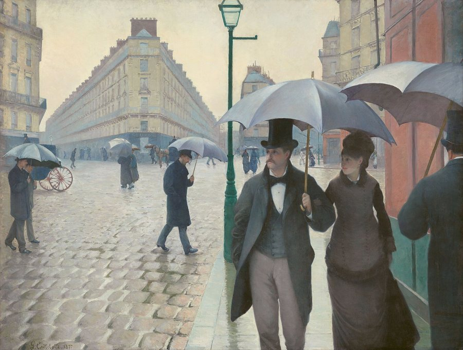
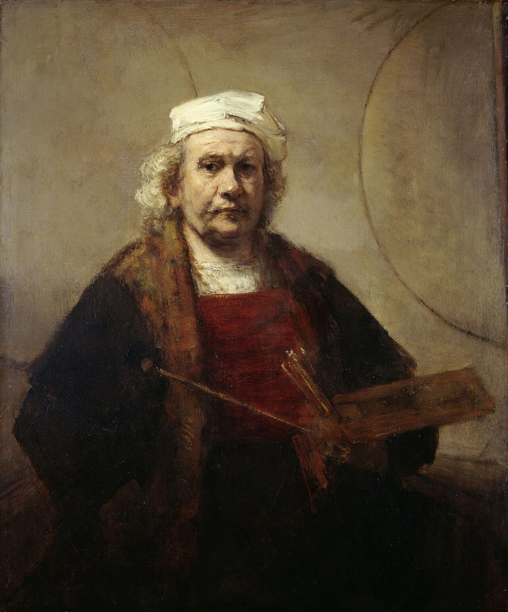
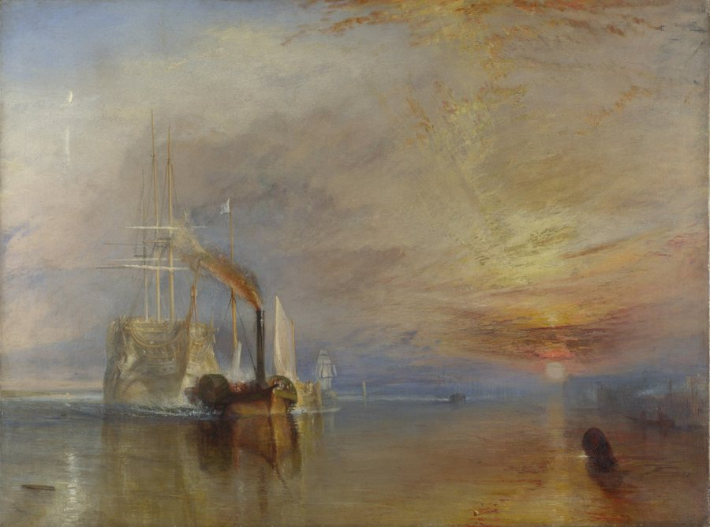
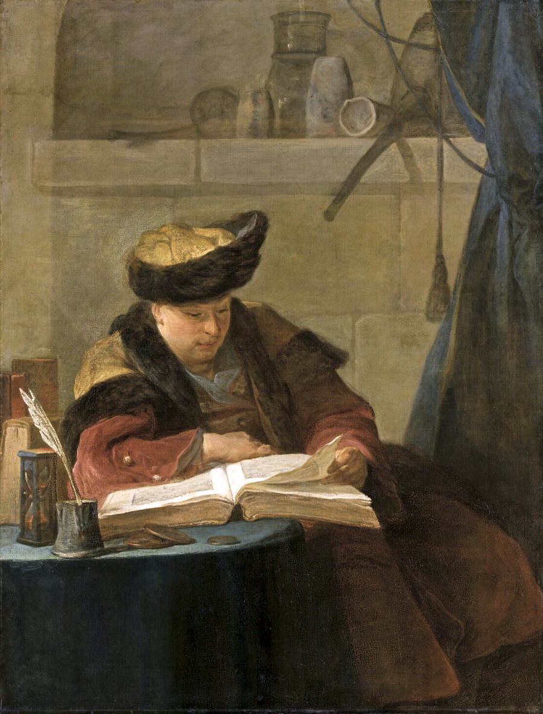

Anglais · A Day in London
Une journée à Londres pour travailler la langue et la culture.
Voir le supportAnnonce FacebookCatalogue pédagogique
Séquences prêtes à l'emploi · Français, anglais · Tous niveaux
Photographie : Carol M. Highsmith, salle de lecture de la Library of Congress. Domaine public.
À propos
Ces séquences sont le fruit de longs mois de travail. Je les ai conçues d'abord pour les professeurs remplaçants et les professeurs contractuels, qui reprennent une classe en cours d'année et doivent s'approprier, souvent sans manuel, les cours et le manuel de quelqu'un d'autre. Elles s'adressent aussi aux élèves absents pour cause de maladie ou d'hospitalisation longue, qui peuvent suivre à distance. Il s'agit en fait de garder le fil de l'éducation.
Elles servent également à celles et ceux qui veulent construire une progression sur toute l'année ou renouveler leurs habitudes, ainsi qu'aux néo-titulaires et aux professeurs stagiaires, qui trouveront ici des supports de cours clé en main pour leurs séances.
Je n'ai pas la prétention de tout savoir, mais j'ai trente-cinq ans d'expérience, et j'ai souhaité vous les proposer à titre gracieux. Rien ne vous oblige, bien sûr, à consulter ce site : vous pouvez simplement le parcourir comme une promenade, et le visiter comme une petite galerie.
Madame Carole Paoli Pompougnac
Section
Anglais, Lettres, option littérature et HLP, de la Seconde à la Terminale.
Une journée à Londres pour travailler la langue et la culture.
Voir le supportAnnonce FacebookSe déplacer à Londres : transports et langage utile.
Voir le supportAnnonce FacebookLe marathon de New York comme disruptor urbain et social.
Voir le supportAnnonce FacebookMéthodologie de l'écrit : construire un essai en anglais.
Voir le supportAnnonce FacebookRéfléchir aux capitales et à ce qu'elles révèlent.
Voir le supportAnnonce FacebookComparer villes et capitales aux États-Unis et dans le Commonwealth.
Voir le supportAnnonce FacebookSéquence autour de MI5/MI6 et de l'entretien.
Voir le supportAnnonce FacebookÉlections aux États-Unis : lire et débattre.
Voir le supportAnnonce FacebookPortrait d'Elizabeth II pour travailler la culture britannique.
Voir le supportAnnonce FacebookDe la Magna Carta à Downing Street : institutions britanniques.
Voir le supportAnnonce FacebookEnjeux de territoire et de ressources en LVA B1+.
Voir le supportAnnonce FacebookPoésie : Rimbaud et le motif du départ.
Voir le supportAnnonce FacebookHugo à l'oral : la figure d'Enjolras sur la barricade.
Voir le supportAnnonce FacebookLittérature d'idées et presse en Première.
Voir le supportAnnonce FacebookMaupassant : lire et analyser Boule de suif.
Voir le supportAnnonce FacebookDu secret des choses au vertige de la consommation, en Première générale. Une version Terminale spécialité HLP, pour préparer la classe prépa littéraire et l'université, sera proposée à côté de celle-ci.
Niveau PremièreTerminale spécialité HLP · Préparer la classe prépa littéraire (à paraître)Julien Gracq : lire pour écrire.
Voir le supportAnnonce FacebookPréparation au Bac de français : s'approprier les textes.
Voir le supportAnnonce FacebookDu masque comique à la cruauté tragique : Shakespeare, Marivaux, Musset.
Voir le supportAnnonce FacebookOthello en perspective hypokhâgne / Licence LLCER.
Voir le supportAnnonce FacebookBarthes et Baudrillard : ouvrir la modernité vers la prépa littéraire.
Voir le supportAnnonce FacebookMalraux et Gombrich : interprétation littéraire et essai philosophique sur le Musée imaginaire, Benjamin et Barthes.
Voir le support
Section
Supports d'anglais et de lettres pour le CAP et le Bac professionnel.
Une journée à Londres pour travailler la langue et la culture.
Voir le supportAnnonce FacebookSe déplacer à Londres : transports et langage utile.
Voir le supportAnnonce FacebookBoîte à outils d'examen pour le CAP Coiffure (A2).
Voir le supportAnnonce FacebookBoîte à outils d'examen A2, My Working Day, pour plusieurs métiers de CAP (lycée professionnel et CFA) et de CAPA (lycée agricole).
Voir le supportParcours anglais Bac pro autour des quatre compétences.
Voir le supportAnnonce FacebookSupports pour le Bac pro à distance en anglais et en français.
Voir le supportAnnonce FacebookImmobilier new-yorkais : séquence en cinq séances.
Voir le supportAnnonce FacebookPVT, budget et emploi : partir en Australie (B1).
Voir le supportAnnonce FacebookAnglais professionnel du CAP A2 au Bac pro B1 à B2.
Voir le supportAnglais du commerce et de la vente.
Voir le supportAnnonce FacebookAnglais professionnel en cuisine.
Voir le supportAnnonce FacebookVendre des produits locaux à la foire (B1).
Voir le supportAnnonce FacebookTravailler l'oral en anglais Bac pro.
Voir le supportAnnonce FacebookJean Teulé en Terminale Bac pro.
Voir le supportAnnonce FacebookLes circuits de l'information en Seconde Bac pro.
Voir le supportAnnonce FacebookProjet chef-d'œuvre, aussi adaptable en SEGPA 4e à 3e.
Voir le supportAnnonce Facebook
Section
Anglais et Lettres rangés par diplôme préparé.
Ressources pour apprentis en filière Production.
Voir le supportAnnonce FacebookVocabulaire de la cuisine et du quotidien (CAP A2).
Voir le supportAnnonce FacebookFrançais professionnel pour le CAP et le CFA.
Voir le supportAnnonce FacebookPréparation de l'oral en français pour le CFA.
Voir le supportAnnonce Facebook
Collection
Outils transversaux : méthode, progression annuelle, évaluation, GEREX.
Présentation de GEREX pour retrouver des outils utiles en classe.
Voir le supportAnnonce FacebookApproche du théâtre : lire, dire et jouer les textes.
Voir le supportAnnonce FacebookExercices de ponctuation en anglais.
Voir le supportAnnonce FacebookMéthodes pour résumer un texte et construire une argumentation.
Voir le supportAnnonce FacebookPistes pour aider les élèves à apprendre efficacement.
Voir le supportAnnonce FacebookDonner le goût de l'étude et de la curiosité intellectuelle.
Voir le supportAnnonce FacebookOrganiser et animer des cours à distance en français et en anglais.
Voir le supportAnnonce FacebookÉvaluation au service des progrès des élèves.
Voir le supportAnnonce FacebookAtelier pour élargir le vocabulaire en anglais.
Voir le supportAnnonce FacebookFiches GEREX pour le français et l'anglais, du CAP au Bac général.
Voir le supportAnnonce FacebookEspace de soutien s'appuyant sur les outils GEREX.
Voir le supportAnnonce FacebookPrise de notes pour le post-bac (BTS, IUT, université).
Voir le supportAnnonce FacebookRepères pour une pédagogie orientée vers la réussite.
Voir le supportAnnonce FacebookProgression annuelle en français et en anglais, de la Seconde à la Terminale.
Voir le supportAnnonce Facebook
Section
Anglais et Lettres pour les lycées agricoles, du CAP au BTSA.
Parcours anglais et français pour les lycées agricoles.
Voir le supportAnnonce FacebookVocabulaire de la cuisine et de la ferme.
Voir le supportAnnonce FacebookCamus en BTSA (M22) : l'individu face aux normes.
Voir le supportAnnonce FacebookZola et le Grand Oral dans l'enseignement agricole.
Voir le supportAnnonce Facebook
Section
Séquences d'anglais et de français pour les niveaux 6e à 3e, y compris SEGPA.
Année complète en 5e LVA A2 / LVB A1+, unités culturelles UK.
Voir le supportAnnonce FacebookSéquences GEREX pour accompagner du niveau 6e à 3e.
Voir le supportAnnonce Facebook
Parcours de français pour la quatrième, dans la progression du cycle 4, avec une préparation au brevet.
Voir le supportGustave Caillebotte, Rue de Paris, temps de pluie, 1877. Huile sur toile, Art Institute of Chicago. Domaine public.

Parcours de français pour la troisième : dictée, rédaction, réécriture et oral, pour préparer le DNB 2026.
Voir le supportRembrandt, Autoportrait aux deux cercles, vers 1665-1669. Huile sur toile, Kenwood House, Londres. Domaine public.
A full year of English in quatrième, taught step by step.
Voir le supportThomas Moran, The Grand Canyon of the Yellowstone, 1872. Oil on canvas. Smithsonian American Art Museum, Washington. Public domain.

A full year of English in troisième, with DNB preparation through continuous classroom assessment.
Voir le supportJ. M. W. Turner, The Fighting Temeraire tugged to her last berth to be broken up, 1839. Oil on canvas. National Gallery, London. Public domain.

Panneau dédié au DNB 2026 : français (dictée, rédaction, réécriture, oral) et anglais par le contrôle continu.
Voir le supportJean Siméon Chardin, Un philosophe occupé de sa lecture (Portrait du peintre Joseph Aved), 1734. Musée du Louvre, Paris. Domaine public.